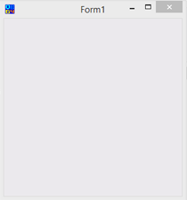
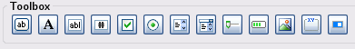

InForm-PE
Welcome to InForm-PE. This is a fork of InForm that is designed to work with QB64-PE. It is currently maintained by QB64 Phoenix Edition Team (QB64-Phoenix-Edition) and can be found on GitHub. The 'PE' references the association with QB64-PE (QB64 Phoenix Edition). It allows you to create graphical user interfaces (GUIs) for your applications
Event-driven QB64 programs
InForm-PE is a Rapid Application Development (RAD) tool for QB64pe. It comprises a library of graphical routines and a WYSIWYG (What You See Is What You Get) editor that enables you to design forms and export the resulting code to generate an event-driven QB64pe program.
In event-driven applications, the program's flow is determined by events such as user actions (mouse clicks, key presses), sensor outputs, or messages from other programs or threads
Interface
The InForm Designer interface consists of a toolbox containing all the controls you can add to your form, a list of properties that are dynamically updated according to the currently selected control, and a color mixer that you use to apply color data to the preview.
The preview is loaded side-by-side with the editor and allows you to see in real-time how your form will look after compilation.
You can detach the preview window by selecting View from the top menu bar and clicking on Keep Preview window attached to remove the checkmark.

Workflow overview
After you have designed your form to your satisfaction, click File > Save. This action exports a form and a source file with extensions .frm and .bas, respectively:
- .frm
The "Form" file is output in QB64 code. If you need to adjust finer details, this file can be loaded back into InForm's designer or manually edited in QB64 or any text editor later. - .bas
This is the actual file where you add your code.
The source file is pre-configured, enabling you to add code that responds to events such as:
- Click
- MouseEnter/MouseLeave (hover)
- FocusIn/FocusOut
- MouseDown/MouseUp (events preceding a click)
- KeyPress
- TextChanged (for text box controls)
- ValueChanged (for track bars, lists, and dropdown lists)
There are also events that occur at specific moments; again, you can add code to respond to these events:
- BeforeInit is triggered just before the form is shown.
- OnLoad is triggered right after the form is first shown.
- BeforeUpdateDisplay is triggered every time the form is about to be repainted.
- BeforeUnload is triggered when the user tries to close the program, either by clicking the window’s X button,
right-clicking in the task bar -> Close, or with Alt+F4 (Windows only). - FormResized is triggered when a form with the CanResize property is resized at runtime.
InForm Designer preview
You can create a new form using the InForm Designer. Within the designer, you can add new controls, edit their properties, align controls, and adjust their z-ordering
Toolbox from left to right:
- Button
- Label
- Textbox
- Numeric Textbox
- Checkbox
- Radio button
- List
- Dropdown list
- Track bar/Slider
- Progress bar
- Picture box
- Frame
- Toggle switch
You can also add menus to your program, both to the menu bar and as contextual menus, using the InForm Designer. Simply navigate to Insert and select Add menu bar/context menu.
Component preview
Your form's design is updated in real-time. The preview component form, shown on the right, is automatically launched with the InForm Designer and provides you with several tools to format your controls.
Features:
- Drag and resize multiple controls simultaneously.
- Right-click contextual menu offers:
- Add menus
- Aligning selected controls
- Center individual controls or groups of selected controls
- Clipboard operations
- Keyboard-enabled: Common keyboard shortcuts will respond as expected.
Where to next
First install QB64pe (required to compile InForm-PE), then install InForm-PE. Finally, visit the Toolbox Controls page, which provides detailed information about component controls.